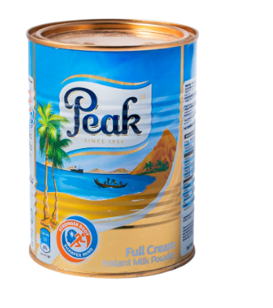
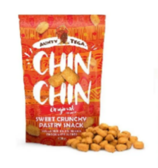
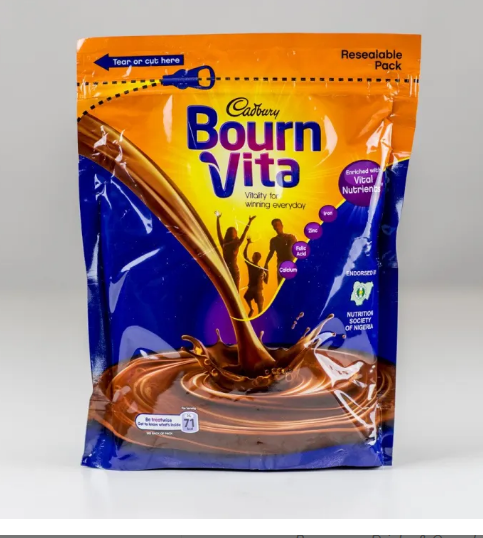

<!DOCTYPE html>
<html lang="en">
<head>
    <meta charset="UTF-8">
    <meta name="viewport" content="width=device-width, initial-scale=1.0">
    <title>Document</title>
</head>
<body>
    
</body>
</html>
<link href="https://cdn.jsdelivr.net/npm/bootstrap@5.3.2/dist/css/bootstrap.min.css" rel="stylesheet" integrity="sha384-T3c6CoIi6uLrA9TneNEoa7RxnatzjcDSCmG1MXxSR1GAsXEV/Dwwykc2MPK8M2HN" crossorigin="anonymous">
    <script src="https://cdn.jsdelivr.net/npm/bootstrap@5.3.2/dist/js/bootstrap.bundle.min.js" integrity="sha384-C6RzsynM9kWDrMNeT87bh95OGNyZPhcTNXj1NW7RuBCsyN/o0jlpcV8Qyq46cDfL" crossorigin="anonymous"></script>
    <link rel="stylesheet" href="./css/main.css">

</head>
<body>
    <nav class="navbar navbar-expand-lg bg-body-tertiary">
        <div class="container-fluid">
          <a class="navbar-brand" href="./index.html">African Store</a>
          <button class="navbar-toggler" type="button" data-bs-toggle="collapse" data-bs-target="#navbarNavAltMarkup" aria-controls="navbarNavAltMarkup" aria-expanded="false" aria-label="Toggle navigation">
            <span class="navbar-toggler-icon"></span>
          </button>
          <div class="collapse navbar-collapse" id="navbarNavAltMarkup">
            <div class="navbar-nav">
              <a class="nav-link active" aria-current="page" href="#">Home</a>
              <a class="nav-link" href="./registration.html">register</a>
                <a class="nav-link" href="./login.html">login</a>
                <a class="nav-link" href="./product.html">products</a>
              <a class="nav-link" href="./cart.html">cart</a>
              
            </div>
          </div>
        </div>
    </nav>
    <main>
        <div  class="card">
            
            <strong>milk.png</strong>
            <p>Peak Milk Powder is made of the most delicious pure cow’s milk. Peak Whole Milk Powder has a rich and creamy taste and contains important nutrients.
            <div class="price">$18.99</div> 
            <button>Add to <cart</button>
            </div>
        <div> African snacks
            
            <strong>beanut</strong>
            <p>Peanuts (Groundnuts) is a popular and well-loved snack in Africa.They are commonly used for making Groundnut soup, Kunu- geda (Groundnut juice),  Peanut sticks (kulikuli), Peanut butter, some seasonings, and Groundnut oil.
                <div class="price">$10.99</div>
                <button>Add to <cart></button>
                </div>
                <div>Vita
                    
                    <strong>vita</strong>
                    

                </div>


    